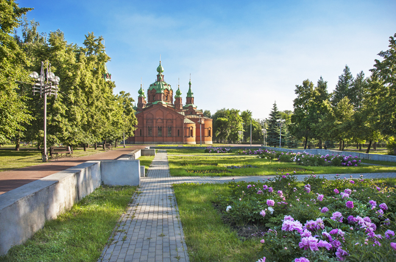
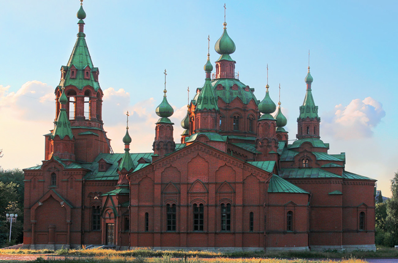
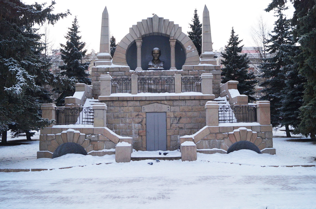

Алое Поле
«Место встречи — Алое поле», — эта фраза вряд ли вызовет недоумение у жителя Челябинска. Это место в городе знает каждый. Правда, раньше оно носило другие имена: Ярмарочная площадь, Александровская площадь, площадь имени В. И. Ленина, детский парк имени 30-летия ВКЛСМ. Раньше здесь проходили ярмарки, а сейчас это сквер, по запутанным дорожкам которого любят прогуливаться горожане.
Кроме природных красот, стоит здесь взглянуть в органный зал и бывшую церковь. Если повезет, можно попасть на увлекательный концерт с участием музыкантов со всего мира. По субботам зал работает в режиме ЗАГСА. Во Дворец пионеров и школьников имени Крупской детвора спешит в различные кружки и секции.
Особо любопытные памятники Алого поля: гигантский бюст Ленина, выполненный в виде гранитного мавзолея, имеющего два этажа. Его центральный вход обрамлен лестницами, огороженными коваными чугунными решетками, второй этаж — это ниша, где стоит бюст вождя. Еще один замечательный памятник, считающийся произведением искусства — монумент «Орленок».
Добраться до Алого поля можно на большинстве городских автобусов, маршруток и трамваев.